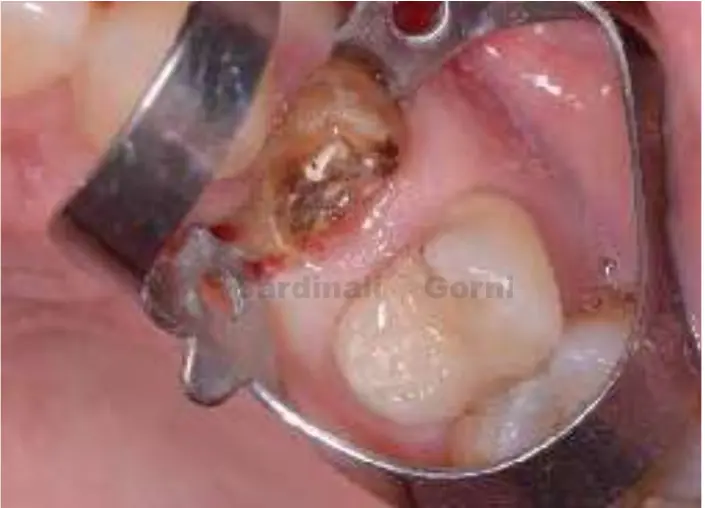
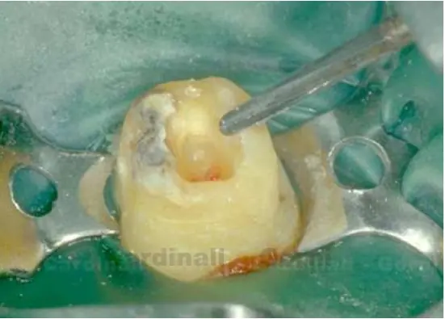

نسخه استخراجشده؛ ترجمه یا تأیید علمی انجام نشده است. وضعیت: captured
پرمولر اول بالا برای درمان ریشه آمده و کاسپ باکالش تا نزدیک لثه شکسته است. کلمپهای پرمولر کیت یا لقاند یا یک نقطهشان در هوا میماند. چه گزینههایی داری؟

کلمپ پرمولر را از روی اندازهی دندان و جای لبهی حفره انتخاب کن:
کلمپ 9 نوکهای کوچکی دارد و عمیق میرسد؛ روی پرمولر تخریبشده اغلب خوب مینشیند. کلمپ 212 هم روی پرمولر بالا به کار رفته تا قانون چهار نقطه رعایت شود. اگر پس از نشستن کلمپ درز کوچکی ماند، کلمپ پایدار را عوض نکن؛ درز را با لیکوئید دم سیل کن.
در ترمیم دندان قدامی معمولاً کلمپ لازم نیست: ایزولاسیون از پرمولر اول تا پرمولر اول است و ورق را با نخ یا Wedjets نگه میداری. استثنا ضایعهی کلاس V است. در درمان ریشهی دندان قدامی با ایزولاسیون تکدندان، کلمپ لازم است.

اشتباه رایج: کلمپ قدامی را فقط مال دندان قدامی دانستن. وقتی ساختار دندان تا زیر لثه از دست رفته، کلمپ قدامی را میتوان روی هر دندانی، حتی ریشهی باقیماندهی مولر، امتحان کرد.